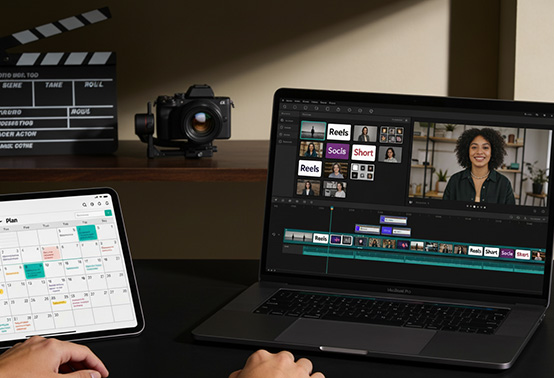
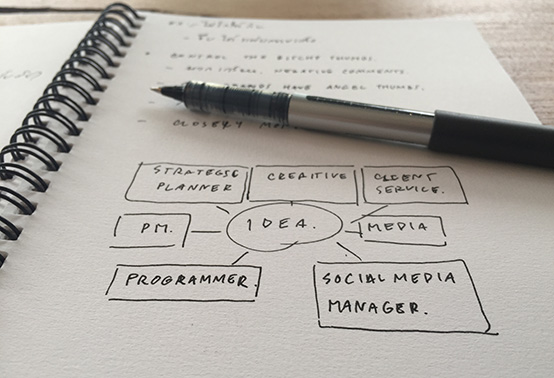

So einfach funktioniert es.
Sie wissen, dass Social Media wichtig ist – aber wer soll planen, drehen und schneiden? Viele Unternehmen, Kommunen und Veranstalter in Thüringen stehen genau vor diesem Problem: Der Wille zur Sichtbarkeit ist da, die Zeit und das Equipment fehlen.
Mit unseren Social-Media-Produktions-Paketen liefern wir die Lösung – regelmäßig, professionell und vollständig fertig geliefert.

Was steckt in einem Social-Media-Produktionspaket?
Unsere Pakete bündeln redaktionelle Planung, professionellen Dreh und saubere Postproduktion in einem festen Leistungsrahmen. Statt einzelner Aufträge entsteht ein planbares Gesamtpaket – abgestimmt auf Ihre Themen, Ihre Zielgruppen und Ihren Veröffentlichungsrhythmus.
Der Fokus liegt klar auf der Produktion: hochwertige Videos, Reels und Kurzformate für Instagram, TikTok, LinkedIn und YouTube – fertig aufbereitet und direkt veröffentlichbar.

Für wen sind die Pakete gemacht?

Kommunen
und öffentliche Einrichtungen → Sichtbar bleiben, Bürgerinnen & Bürger gezielt informieren und dauerhaft digital präsent sein.Vereine
Organisationen und Verbände → Mitglieder gewinnen, Veranstaltungen bewerben, Reichweite aufbauen.Unternehmen
mit regelmäßigem Kommunikationsbedarf → Branding, Produktkommunikation und Kundenbindung.
Veranstalter
und Projektträger → Vorher Vorfreude erzeugen, während des Events dabei sein und danach die Erinnerung sichern.Was Sie mit unseren Paketen gewinnen
Planbarkeit
Feste Inhalte, klare Abläufe und kalkulierbare Kosten – kein spontaner Aufwand, keine Überraschungen.
Kontinuität
Regelmäßig produzierte Inhalte schaffen nachhaltige Sichtbarkeit – nicht nur kurzfristige Aufmerksamkeit.
Effizienz
Ein Drehtag liefert mehrere fertige Formate für verschiedene Plattformen – gebündelt statt einzeln.
Qualität
Professionelle Kamera- und Tontechnik statt Handyaufnahmen – konsistente Bildsprache für Ihre Marke.
Entlastung
Wir planen, drehen und schneiden alles – Sie konzentrieren sich auf Ihr Kerngeschäft.
Skalierbarkeit
Vom Einstiegspaket bis zur Kampagne – die Pakete wachsen flexibel mit Ihren Zielen.
So läuft unsere Zusammenarbeit
Geplant. Produziert. Geliefert. Stressfrei.
Struktur statt Einzelideen
Gemeinsame Planung aller Inhalte für einen festen Zeitraum – in einem kompakten Termin, digital oder vor Ort.
Zentraler Drehtermin
Alle geplanten Inhalte entstehen gebündelt an einem Produktionstag – effizient und ohne laufende Abstimmung.
Alles fertig produziert
Schnitt, Farbkorrektur und Formatanpassung für alle Plattformen – vollständig umgesetzt, genau wie geplant.
Content auf Vorrat
Sie erhalten alle Inhalte fertig aufbereitet – direkt veröffentlichbar für den gesamten geplanten Zeitraum.
Unsere Pakete sind die richtige Wahl – für alle, die professionellen Social-Media-Content wollen, ohne intern Kapazität für Dreh, Schnitt und Planung zu haben.
Bereit für regelmäßigen Content?
Pakete ab 990 €/Monat netto – skalierbar bis zur Kampagnenproduktion.
Die wichtigsten Fragen
Nein. Die Inhalte entstehen mit professioneller Kamera- und Tontechnik sowie festem Produktionsworkflow. Dadurch erreichen wir eine gleichbleibend hohe Bild- und Tonqualität, die sich klar von spontanen Handyaufnahmen unterscheidet.
Unsere Pakete sind Produktionspakete. Der Schwerpunkt liegt auf redaktioneller Planung, professionellem Dreh und sauberer Postproduktion. Wir übernehmen keine laufende Betreuung oder tägliche Postings, sondern liefern fertig produzierte Inhalte für einen klar definierten Zeitraum.
Für Unternehmen, Kommunen, Veranstalter und Organisationen, die regelmäßig Inhalte benötigen, ohne sich ständig selbst darum kümmern zu müssen.
In einem gemeinsamen Termin – digital oder vor Ort – planen wir Themen, Formate und Umfang für den gewünschten Zeitraum strukturiert im Voraus.
Nein. Planung, Produktion und Postproduktion erfolgen gebündelt. Nach einer gemeinsamen Abstimmung erhalten Sie fertige Inhalte für den gesamten Zeitraum.
Der Umfang richtet sich nach dem gewählten Paket und dem geplanten Zeitraum. Ein Dreh liefert mehrere Formate wie Reels, Clips und Social-Media-Posts.
Kleinere Anpassungen sind möglich. Grundsätzlich basiert das Paket jedoch auf der vorab geplanten Struktur, um Effizienz und Verlässlichkeit zu gewährleisten.
Ja. Alle Inhalte werden vollständig produziert, aufbereitet und zur direkten Veröffentlichung für den geplanten Zeitraum übergeben.
Film ab für Ihre Idee!
Und wann erzählen wir Ihre Geschichte?